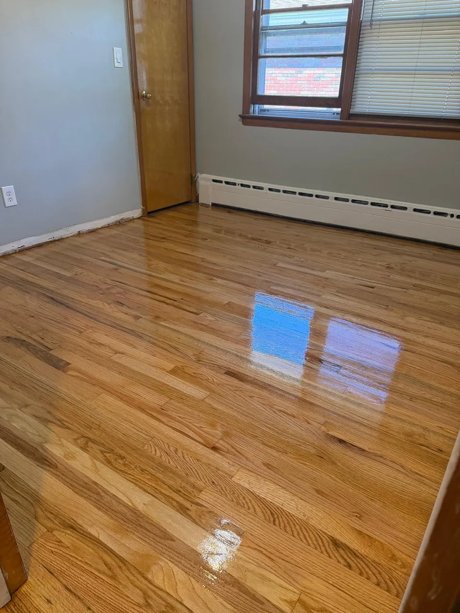

In this article
Quick answer
No. No sanding process captures 100% of every microscopic particle. But high-grade commercial containment systems capture between 95% and 99% of the dust generated, pulling it from the sanding pad into sealed or HEPA-filtered collectors before it reaches your room air, furniture or HVAC system.
In Westfield, Summit, and across Union County, NJ, homeowners often delay refinishing worn wood floors because they fear the cleanup. Traditional floor sanding generates micro-dust that settles into central air ducts, kitchen cabinets, light fixtures, and soft furniture. The mess often takes weeks of deep cleaning to fully clear out.
Dustless hardwood refinishing was developed to solve this exact problem. Marketing claims often use terms like "100% dust-free," leading property owners to wonder if that is literal or an exaggeration. Understanding how heavy-duty containment systems work helps you set accurate expectations and protect your home investment.
The truth about "dustless" hardwood refinishing
To be direct: no sanding process in existence captures 100.0% of every microscopic particle. However, high-grade commercial containment systems capture between 95% and 99% of generated dust before it enters your room air.
95–99%
of sanding dust captured at the source by high-grade commercial containment systems. Not 100%, but the difference you'll notice is in your ducts, cabinets and furniture.
Unlike standard sanding equipment that blows dust into attached fabric bags, professional containment systems connect heavy-duty vacuum units directly to the sanding equipment. High-powered suction tubes pull dust directly from the sanding pad and transfer it into sealed external collectors or HEPA-filtered vacuum units outside the living space.
By stopping wood dust at the point of origin, hardwood floor refinishing restores old floors without spreading debris throughout your entire home.
Traditional sanding vs. high-containment systems
Understanding the mechanical difference between traditional floor sanding and high-containment systems explains why the results are so drastic.
ATraditional sandingA cloth bag on the sander. Fine dust passes through, floats around the room and gets pulled into the HVAC return.
BHigh-containment sandingSuction at the sanding pad, a hose out of the room and a sealed HEPA-filtered collector. Up to 95–99% captured.
Standard sanding relies on basic cloth collection bags attached directly to the sander. As the machine strips old polyurethane and wood layers, fine particles pass straight through the fabric mesh. Escaping dust circulates through room air currents and settles inside HVAC returns, electrical outlets, and unsealed closets, requiring post-project professional deep cleaning for furniture and air ducts.
A high-containment vacuum system utilizes multi-stage HEPA filtration equipment connected to belt sanders and edgers. This system creates continuous negative air pressure at the point of friction, capturing up to 99% of coarse and microscopic wood dust. It keeps indoor air breathable and surfaces clean throughout the project.
If your floor has deep scratches or heavy traffic marks, fixing scratched hardwood floors through a controlled, dust-contained process yields cleaner surface finishes because airborne debris cannot drop onto fresh coats of polyurethane.
How dust containment protects your home and HVAC
Wood dust is abrasive and fine. When standard sanding fills a house with airborne dust, the central heating and air conditioning system pulls those particles straight into ductwork.
In New Jersey homes, where HVAC systems run heavily through changing seasons, contaminated air ducts can blow fine dust back into living areas for months after floor technicians leave. Clogged HVAC filters reduce airflow, force blower motors to work harder, and increase energy bills.
Dust-contained refinishing protects HVAC components, preserves indoor air quality for allergy sufferers, and eliminates the $400 to $800 expense of hiring specialized duct-cleaning services after floor work is finished.
Practical tips for your refinishing project
- Seal return air vents in the work zone. Even with high-efficiency containment equipment running, sealing nearby cold air returns with plastic film adds an extra layer of protection for your HVAC system.
- Verify your contractor's equipment type. Ask if the company uses commercial-grade portable HEPA containment units hooked directly to their machinery or if they simply attach standard shop vacuums to residential equipment. Commercial units deliver superior suction force and higher filtration standards.
- Clear small items before work begins. Remove hanging artwork, curtains, and small decorative objects from the workspace so technicians have full access to baseboards and perimeter edges.
- Consider property timing during seasonal transitions. If you are evaluating hardwood floors in NJ for seasonal shifts, scheduling refinishing during moderate temperature windows in spring or fall helps water-based or oil-based finishes dry at optimal rates.
Financial and practical benefits of modern refinishing
Choosing high-containment dustless refinishing provides direct financial and time-saving advantages.
First, containment systems ensure faster drying and cleaner coating application. Airborne dust particles ruin smooth varnish coats. Keeping the environment clean allows sealers and topcoats to dry clear and smooth without requiring excess intermediate buffing.
Second, it eliminates post-job cleaning costs. Traditional sanding forces homeowners to pay for professional cleaning services or spend weekend hours scrubbing walls, blinds, and trim. Containment sanding leaves rooms ready for immediate furniture replacement once coatings cure.
Third, it preserves the floor lifespan. Systematic containment sanding allows technicians to monitor floor thickness and sand with precision, preserving wear layers for future maintenance cycles.
For homeowners weighing replacing carpet with hardwood floors in New Jersey, refinishing existing hardwood underneath old carpets using dust-contained systems delivers high resale value at a fraction of full replacement costs.
Professional dustless refinishing services by Costa Flooring
Costa Flooring provides professional hardwood sanding and refinishing services designed to keep your home clean and your floors protected. Based in Linden, NJ, our team serves homeowners across Westfield, Summit, Short Hills, Millburn, Chatham, and surrounding Union County communities.

With over 10 years of hands-on experience, Costa Flooring is fully licensed and insured. We use heavy-duty sanding equipment and high-containment dust extraction tools to ensure top-quality results without turning your home into a construction zone.
Every job begins with a straightforward assessment of your floor's wood species, finish condition, and structural integrity. We provide clear communication, transparent pricing, and efficient scheduling from initial estimate to final walkthrough.
Schedule your service visit today
Refinishing your original hardwood floors does not have to mean days of messy cleanup. Professional dust containment systems protect your indoor air quality, safeguard your HVAC system, and deliver durable, smooth floor finishes.
To schedule an estimate for dustless hardwood refinishing in Linden, NJ or nearby areas, call (862) 452-2181 today or request your free estimate online.